Hardware Projects
RFID Tool Lockout System
Aug. 2025 – Present
Work Project — USC Maker Space
Access-control system for the Maker Space's laser cutters and waterjet, replacing shared passwords with university ID swipe access.
- Replaced shared passwords and lockout codes with university ID swipe access on 2 laser cutters and 1 waterjet cutter
- Developed ESP32 firmware in ESP-IDF (C/C++) for HID emulation and RFID UID reading
- Designed a custom carrier PCB and 3D-printed enclosure for the dev board assembly
- Building a cloud registration and staff-approval pipeline with wireless UID database sync to each device
- Leading lab-wide rollout and designing a custom PN532 reader circuit to replace the dev board
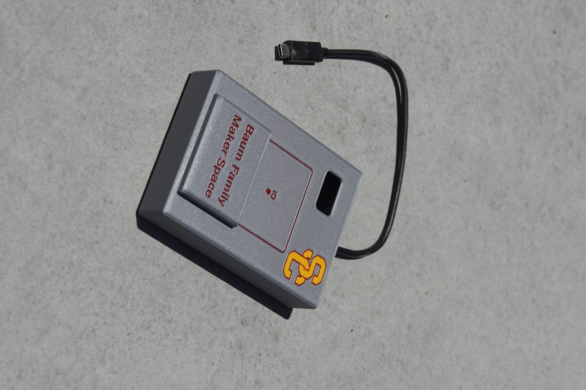

S/H Test PCB — 64-Channel 640MHz Sample-and-Hold Chip
May 2025 – May 2026
Research Project — IEDM Group, USC
Test PCB design and bring-up support for a custom 64-channel, 640MHz sample-and-hold CMOS chip.
- Designed a PGA-socketed test PCB and wirebonding diagram for the chip; interfaced with packaging vendors for assembly
- Diagnosed and characterized the chip using probe stations, parametric analyzers, oscilloscopes, and an off-board ADC
- Assembled, reworked, and brought up mixed-signal PCBs for chip validation, including SMD soldering and signal debugging
- Contributed to a chip publication in IEEE Solid-State Circuits Letters ("A 1.2-V, 8.5-ns Settling, Bi-Slewing CMOS Driver for Heavy Loads in Discrete-Time Analog Computing Applications")
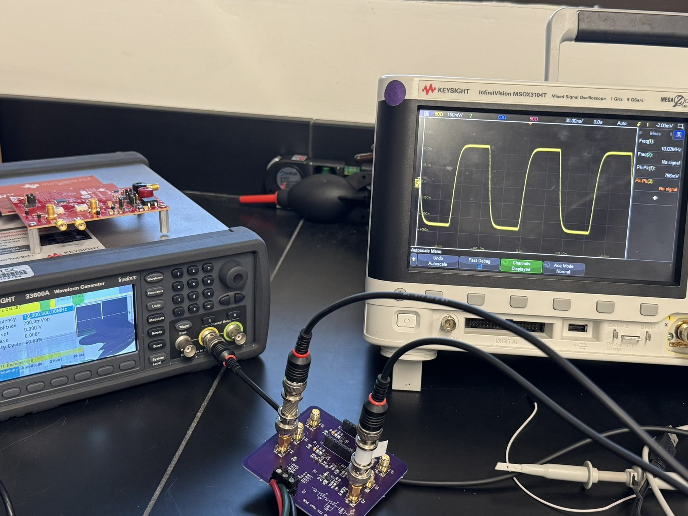


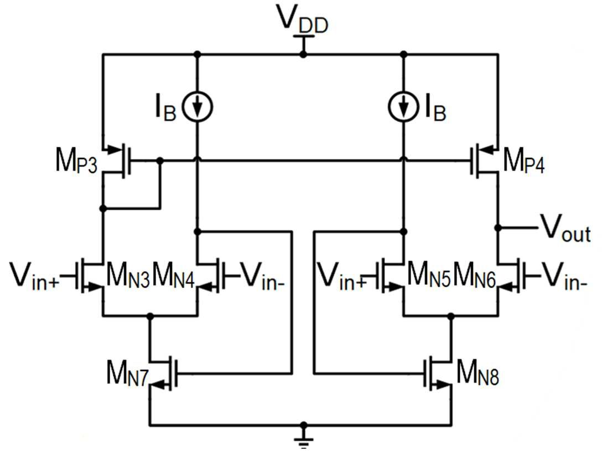
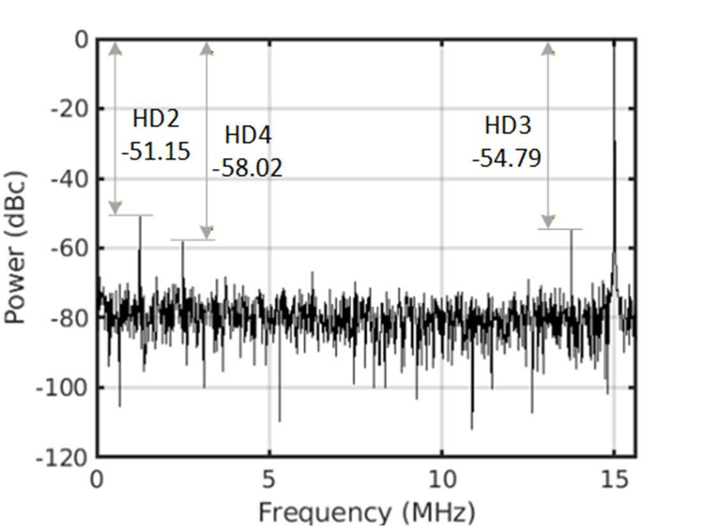
7W Class-A Power Amp
May 2025 – Sep. 2025
Personal Project
Single-ended Class-A amplifier built from schematic to finished chassis.
- Designed a single-ended Class-A topology with NFET output, active load, JFET driver, and BJT current source
- Laid out a through-hole PCB in KiCAD and hand-assembled the board
- Integrated the amplifier into a heatsink-equipped chassis for thermal management of the Class-A bias current


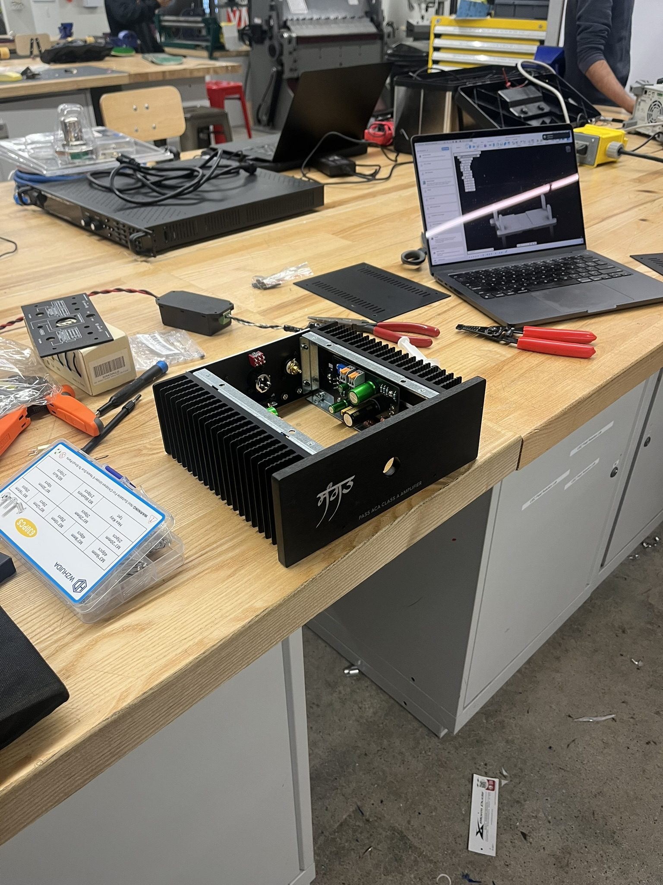
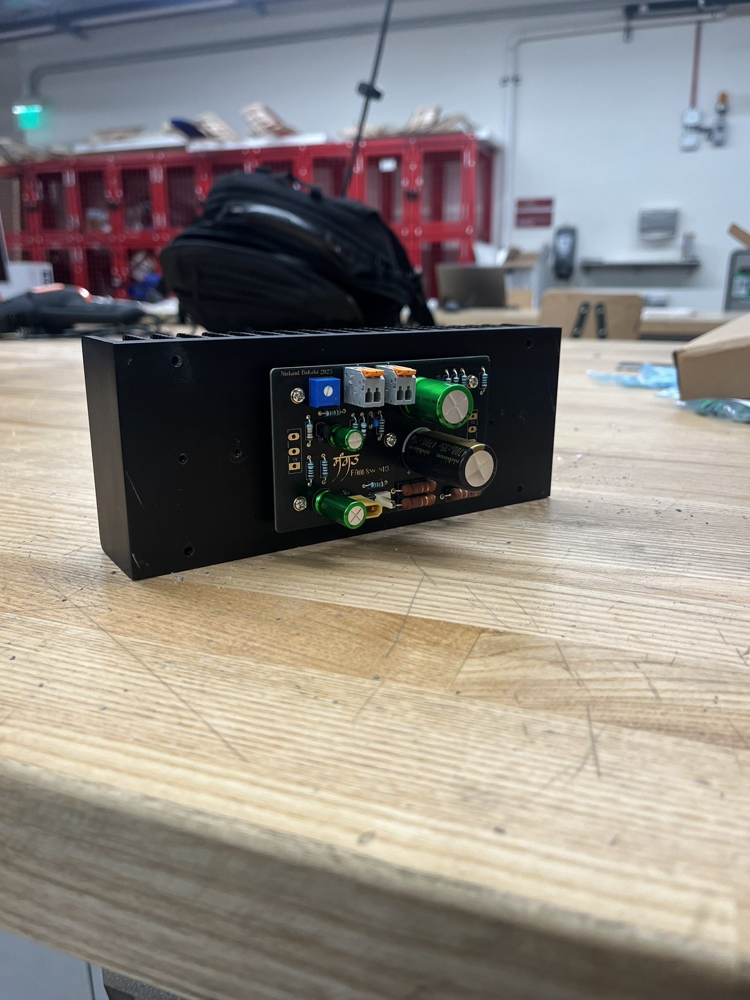
Mini Onken Speaker
Jan. 2024 – May 2024
Personal Project
Scaled-down Onken enclosure built for vintage Altec drivers.
- Designed an 8 cubic foot Onken enclosure with an external 811 sectoral horn for 1970s Altec drivers
- Modeled the design using lumped-parameter simulation in VituixCAD and WinISD
- Fabricated the cabinet from marine-grade Douglas fir plywood using Fusion 360 CAD/CAM and CNC routing
- Designed, built, and bench-measured a crossover network based on the Altec Model 19 topology
Pocket Photometer
May 2021 – Dec. 2021
Volunteer Research — NYU MicroParticle Photo-Physics Lab
Battery-powered optical power meter for a take-home lab kit now sold commercially on Amazon.
- Contributed to development of the Pocket Optics Kit (PO-1) optical power meter, now sold on Amazon
- Simulated the TIA circuit in OrCAD Capture and laid out the PCB in KiCAD
- Bench-tested the assembled board across 4 power ranges (1µW – 1mW) and a 350–1050nm wavelength range
- Achieved 40–75% higher accuracy than smartphone light-meter apps
IC Design / Simulation Projects
12-Bit 10MS/s Asynchronous SAR ADC
Mar. 2025 – May 2025
Class Project — EE631
12-bit, 10MS/s asynchronous SAR ADC designed in TSMC 45nm CMOS.
- Designed the differential CDAC, strongarm comparator, D-flip-flops, and self-timed asynchronous control logic
- Implemented monotonic switching and bottom-plate sampling to reduce pedestal error and eliminate static power
- Simulated in Cadence Spectre with waveforms recovered via a custom Python script; achieved 9.03-bit ENOB (56.1 dB SNDR) at 1MHz
- Developed a SPICE-netlist prompting method for AI-assisted transistor sizing (ChatGPT o3), producing one of the few functional AI-sized designs among 15 class teams
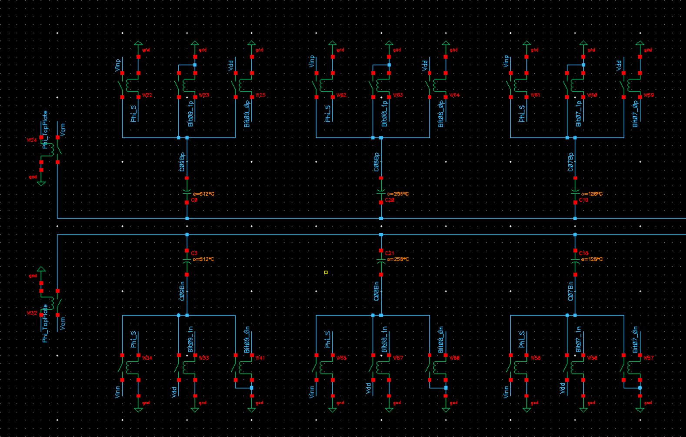
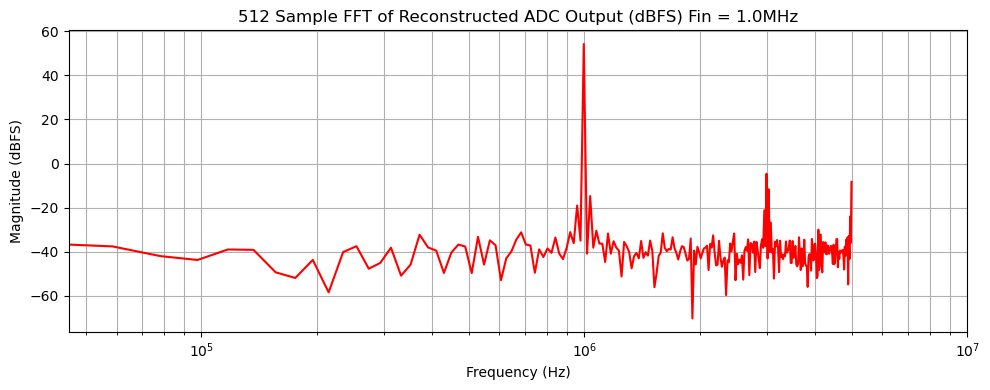
180nm 5.7GHz Rail-to-Rail OTA
Oct. 2024 – Dec. 2024
Class Project — EE536A
180nm CMOS rail-to-rail folded cascode OTA.
- Achieved 51 dB DC gain, 5.7 GHz unity-gain bandwidth, and 0.77 nV/√Hz input-referred noise
- Designed a Differential-Difference Amplifier (DDA) based common-mode feedback circuit adapted from IEEE literature, avoiding poly resistors for output common-mode setting
- Standardized device sizing in practical multiples (e.g., 18µm increments) to align with Process Control Monitoring structures used in wafer-level characterization

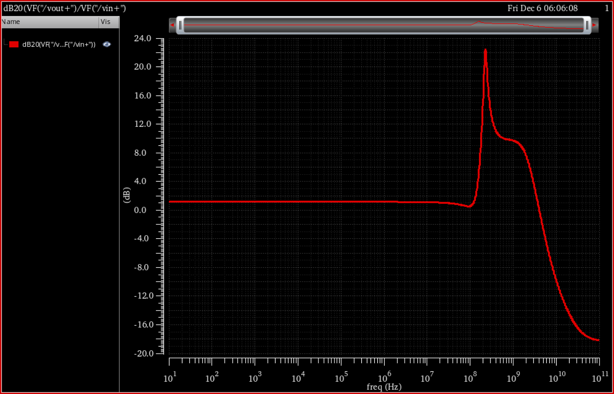
250W 2-Switch Forward Converter
Mar. 2026 – May 2026
Class Project — EE528
250W two-switch forward converter for medium-voltage DC-DC conversion.
- Designed a 250W, 450VDC-to-190VDC converter with custom transformer and inductor magnetics
- Selected Wolfspeed SiC MOSFETs and Schottky diodes for medium-voltage switching
- Designed a Type-II compensator and feedback network for output regulation
- Simulated power stage and control loop performance in PLECS, achieving 92.6% efficiency at 300W with sub-2% output ripple during load transients
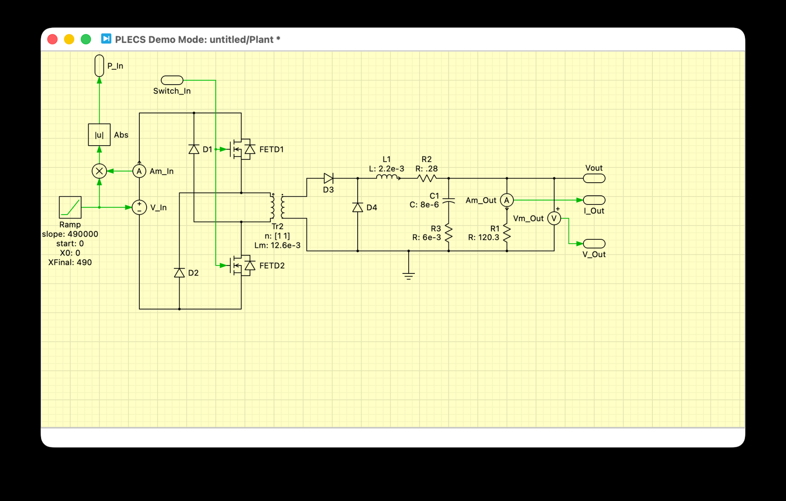
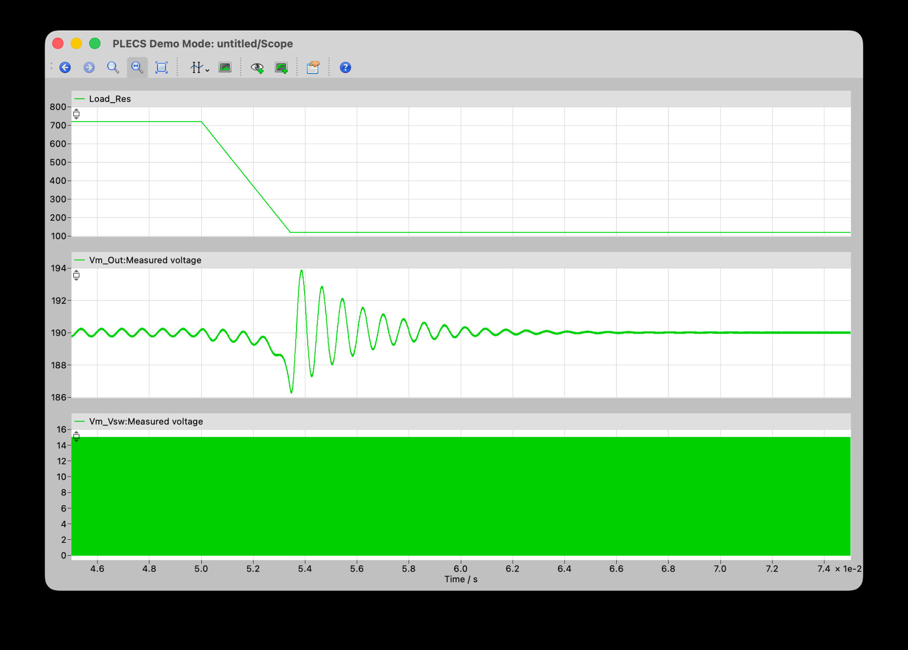